Commencer l’aventure >
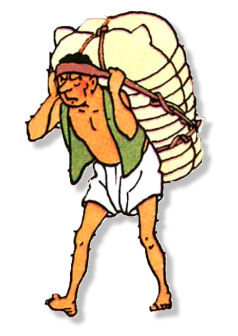
UN SHERPA QUI POURRAIT ÊTRE UTILE POUR PARTIR À L’AVENTURE
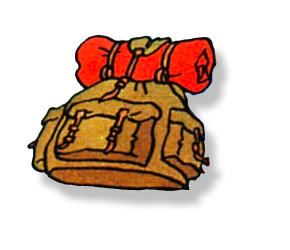
UN SAC D’AFFAIRES POUR SURVIVRE EN MONTAGNE
partir en expédition >
prendre de l’altitude >
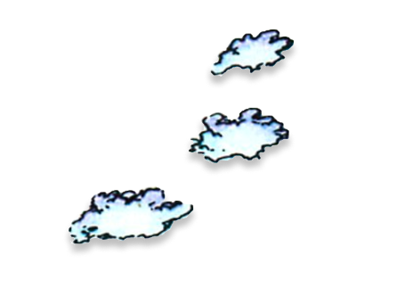
LES TRACES D’UN ANIMAL MYSTIQUE
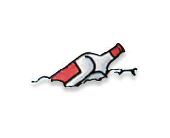
LA BOUTEILLE DU CAPITAINE HADDOCK
À ÉTÉ ABANDONNÉE PAR UNE CRÉATURE
suivre les traces >
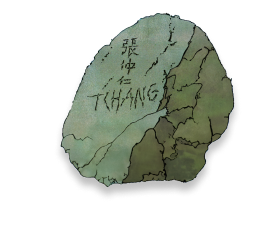
QUELQU’UN EST PASSÉ PAR LÀ
observer l’environnement >
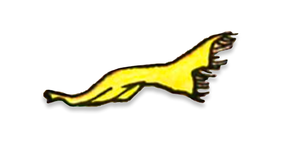
UN SIGNE DE VIE
grimper la montagne >
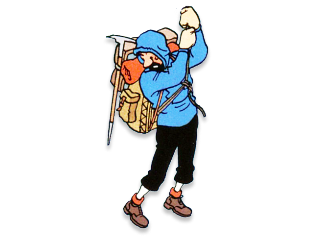
UN COMPAGNON D’AVENTURE PLUTÔT TURBULANT
rencontre innatendue >
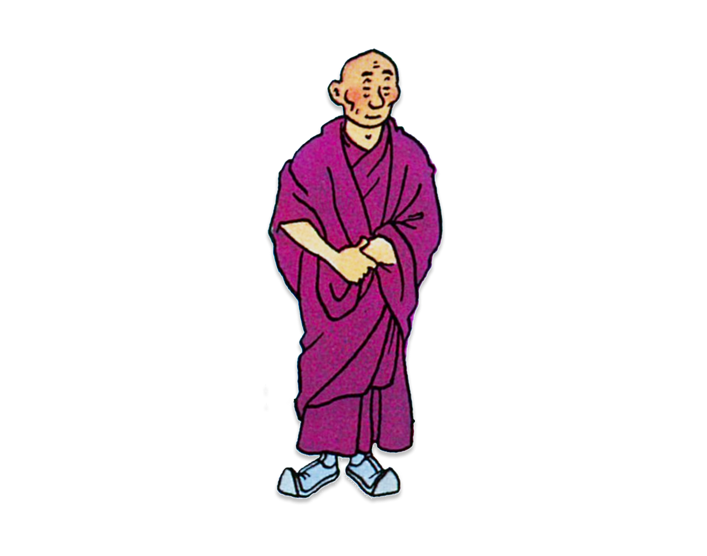
UNE AIDE PRÉCIEUSE
découvrir le yeti >
Entrer dans sa caverne >
qu’est-ce que tintin a bien pu découvrir? >
Commander la bande dessinée

 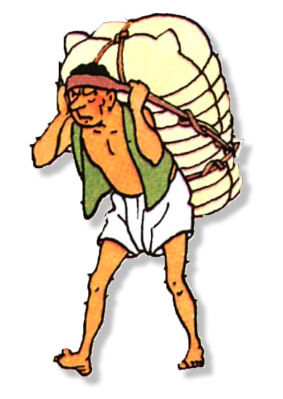
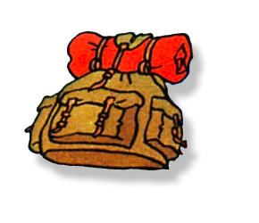
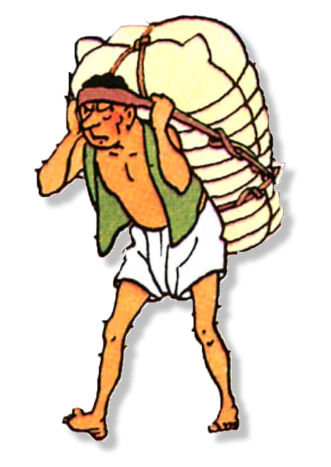
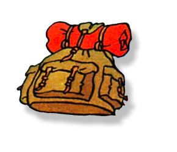

 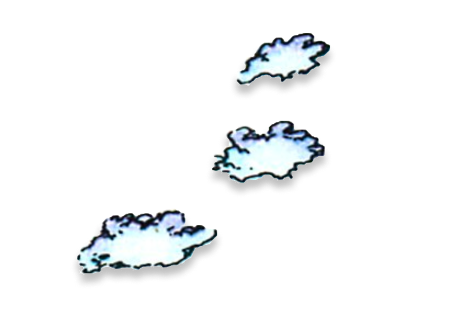
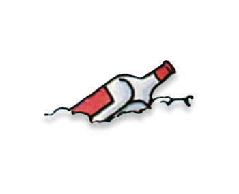
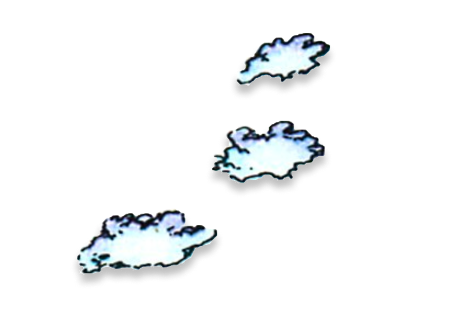
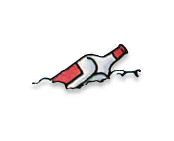
 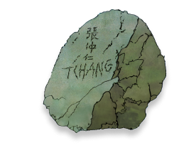
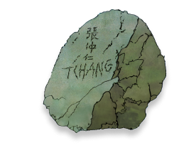

 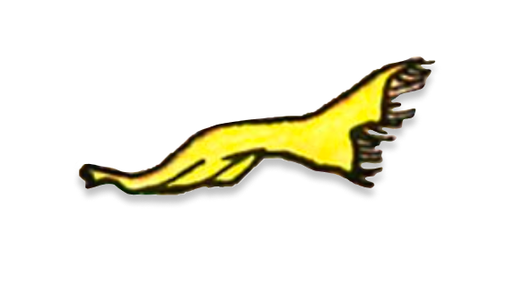
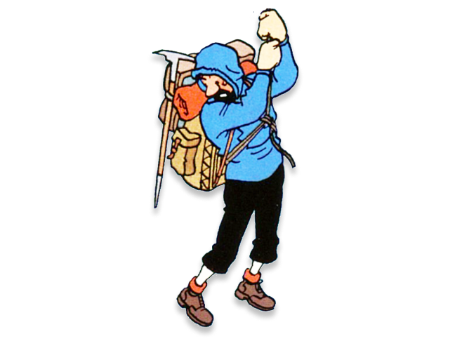
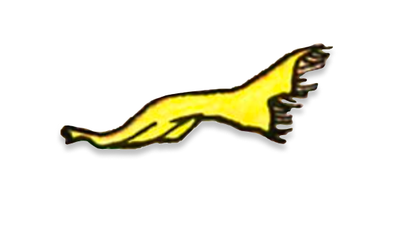
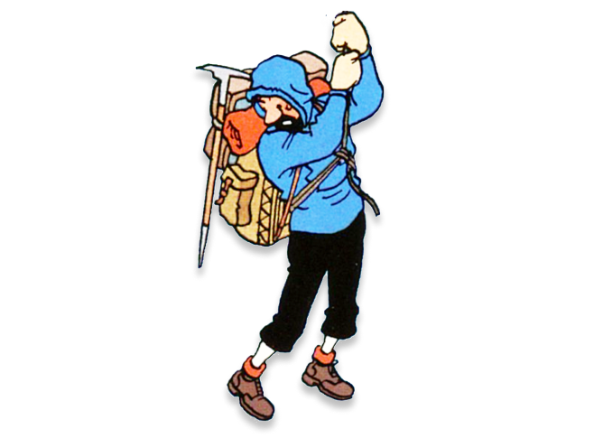
 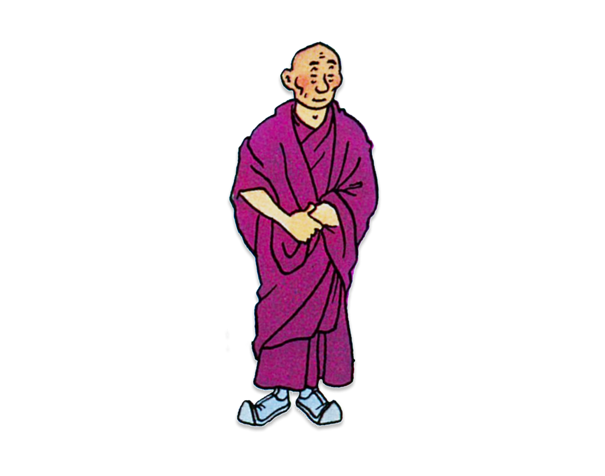
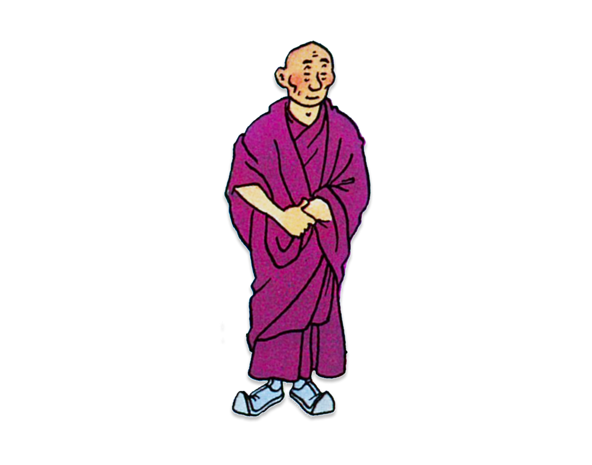